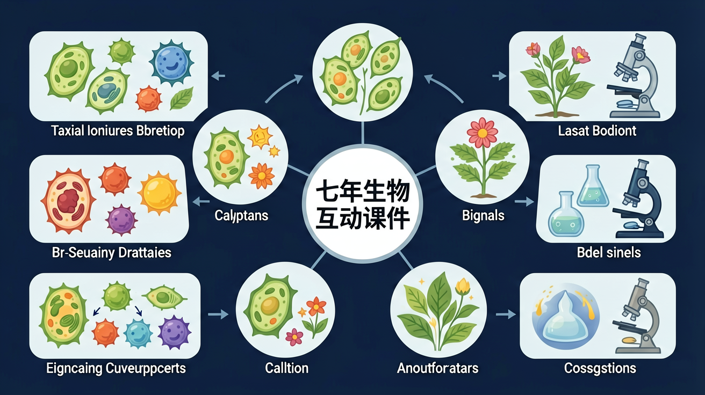

探索扦插、嫁接、压条、孢子等不需要两性细胞结合的繁殖方式

🎯 能说出3种无性生殖方式
🎯 能判断常见生物的无性生殖类型
🎯 能分析无性生殖的优缺点
月季插一段枝条就能长出新植株；苹果通过嫁接保持优良品种；土豆的芽眼能长出新植株……
这些都没有经过受精，也没有种子，那新个体的遗传物质从哪里来？这种繁殖方式有什么优缺点？
本课将带你认识无性生殖的概念，掌握扦插、嫁接、压条、分株、孢子繁殖等常见方式，理解各方式的原理和应用。
枝条插入土中生根
砧木与接穗结合
枝条压土生根后剪断
低等植物的无性繁殖
❓ 为什么细菌分裂也算无性生殖？
❓ 酵母菌出芽和土豆发芽是一回事吗？
❓ 克隆羊多利算不算无性生殖？
学完这一课，这些问题你都能自信地回答。
下列属于无性生殖的是？
无性生殖的核心特点是？
无性生殖是指不经过两性生殖细胞的结合，由母体直接产生新个体的生殖方式。
特点：后代的遗传物质与母体完全相同（除突变外），能保持亲本的优良性状。
月季、葡萄；将枝条插入土壤，生根后独立生长
果树（苹果/梨）；砧木提供根系，接穗保留优良品种
桂花、龙眼；枝条压入土中生根，再与母株分离
马铃薯（块茎）、水仙（鳞茎）；营养器官直接萌发
蕨类、苔藓、真菌；孢子在适宜条件下萌发
变形虫、草履虫；细胞一分为二
| 比较项目 | 有性生殖 | 无性生殖 |
|---|---|---|
| 是否需要精卵结合 | 需要 | 不需要 |
| 后代遗传多样性 | 较高 | 较低（与亲本相同） |
| 保持亲本优良性状 | 不稳定 | 稳定 |
| 繁殖速度 | 较慢 | 较快 |
无性生殖=亲代直接产生子代，无配子结合
单细胞生物分裂，多细胞生物出芽/营养繁殖
比有性生殖快但变异少，适合稳定环境
观察酵母菌出芽装片，找芽体与母体连接处
果园用扦插繁殖果树，如何避免病害传播？
将生殖方式拖入对应类别
关于无性生殖最准确的说法是
观察酵母菌培养液在显微镜下的变化
先独立作答，再点选项查看对错与错因。
下列哪项属于无性生殖？
草莓通过匍匐茎繁殖的特点是
下列繁殖方式与其它三项不同的是
利用植物体营养器官进行的无性生殖称为____繁殖
答案：营养
如马铃薯块茎、草莓匍匐茎都属于营养器官
水螅通过____生殖产生新个体
答案：出芽
体壁向外突出形成芽体脱落
✅ 孢子是无性生殖细胞，如霉菌孢子
💡 混淆孢子与配子的形成过程
✅ 仅具分生组织的植物可行（如马铃薯块茎）
💡 忽视植物器官的特定结构
口诀：无性生殖三件套：分裂出芽营养跑
类比：像复印机复印文件，后代和原件几乎一样
前面说到无性生殖"后代与亲本遗传物质相同"，这背后的根本原因是有丝分裂：母体细胞通过有丝分裂产生新个体，染色体（DNA）复制后平均分配，子代细胞的基因与亲本几乎完全一致。
🔬 对比有性生殖：有性生殖要经过减数分裂（基因减半）+ 受精（两个亲本基因重组），所以后代会出现变异，不完全像亲本。
⚖️ 代价与局限：正因遗传物质几乎不变，无性生殖后代变异极少。环境稳定时这是优势（稳定保种），但环境剧变时，缺乏变异就意味着缺乏"能活下来的新类型"——这正是高等生物在长期演化中主要依靠有性生殖的原因。
🌱 农业意义：扦插、嫁接、组织培养之所以能快速大量繁殖又保持良种，靠的正是这一原理。
无性生殖 = 不需要精卵结合，后代遗传物质与亲本相同
扦插（月季）→ 嫁接（果树）→ 压条（桂花）→ 孢子（蕨类）
嫁接：接穗决定性状，砧木提供营养
（中考真题）马铃薯块茎繁殖属于？
克隆技术属于无性生殖，因为？
果园防治病害传播，最应避免？